🎉活动与演出
「❤️本周长周末湾区精彩活动5/21-5/25」
本周末Memorial Day长周末活动汇总，懒人必备的一站式攻略。
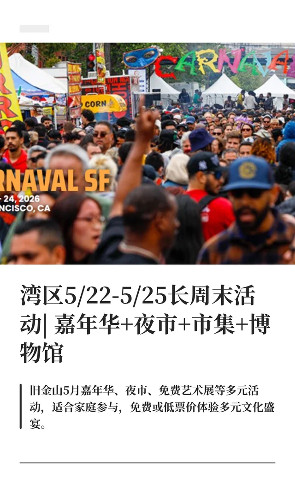
「湾区5/22-5/25长周末活动| 嘉年华+夜市+市集+博物馆」
嘉年华、夜市、市集全都有，低票价就能玩遍多元文化。
「5月的湾区太好逛了🔥码住这篇！」
整个5月的活动一网打尽，从博物馆免费日到Napa音乐节都有。
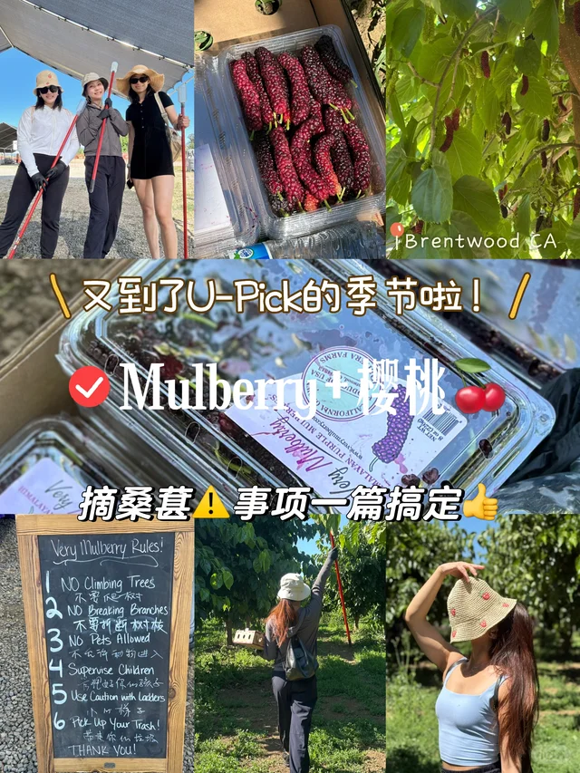
「湾区限定｜Mulberry U Pick」
桑葚和樱桃U-Pick季节到了，周末带娃郊游的好选择。
「五月上半月湾区演出信息」
想看现场演出的不要错过，五月演出排片整理得很全。
🍜美食探店
「湾区｜开车一小时也要去吃的贵州烧椒鸡！好吃」
博主开车一小时也要去吃的贵州菜，烧椒鸡看着就上头。
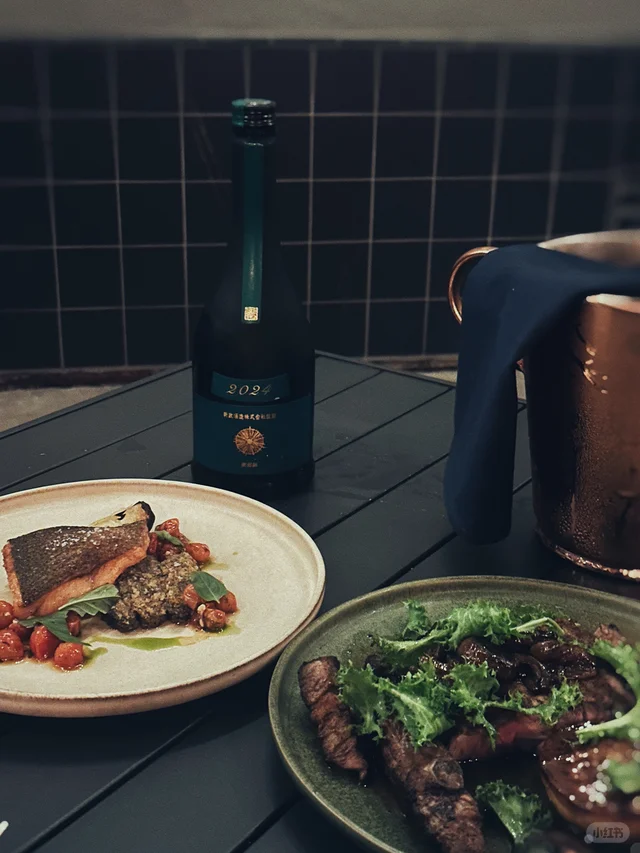
「旧金山湾区的宝藏南意小馆」
藏在湾区的南意餐厅，适合周末和朋友慢慢吃一顿。
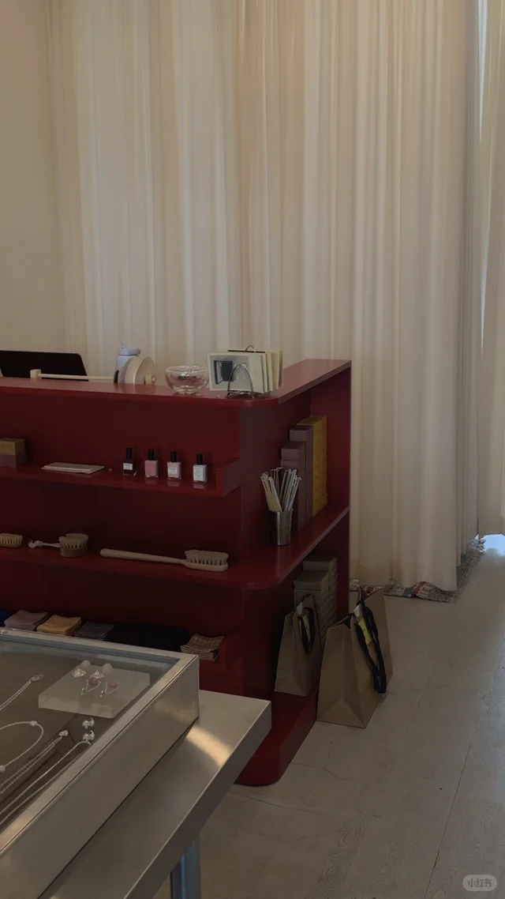
「Verjus SF ｜三番绝美绝好吃小酒馆」
SF高颜值小酒馆，约会和闺蜜聚餐都很合适。
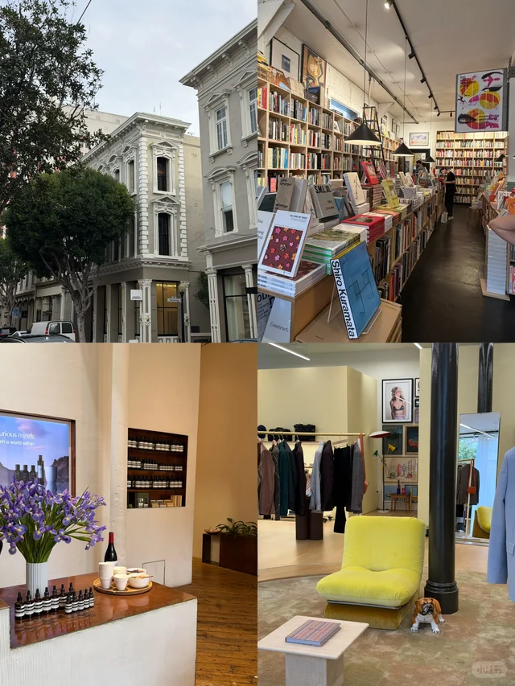
「旧金山 $98 tasting menu 无敌好吃 😄」
$98的tasting menu性价比超高，SF高品质用餐的隐藏选项。
「湾区美食丨比招牌鸭肉更好吃的是炸羊舌」
鸭肉之外的隐藏菜单更精彩，懂吃的人不会错过炸羊舌。
🌲户外自然
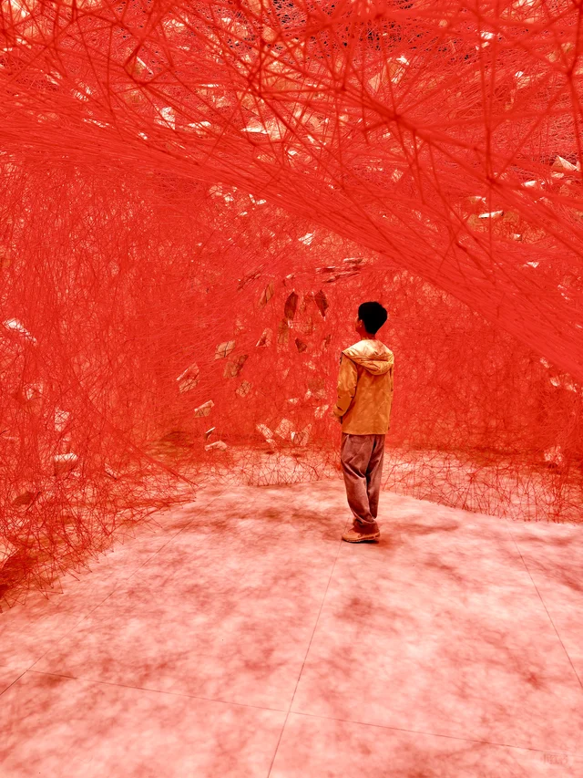
「湾区周边去哪玩📍8个冷门Day Trip打卡地」
8个不踩雷的冷门Day Trip地点，避开人潮玩湾区。
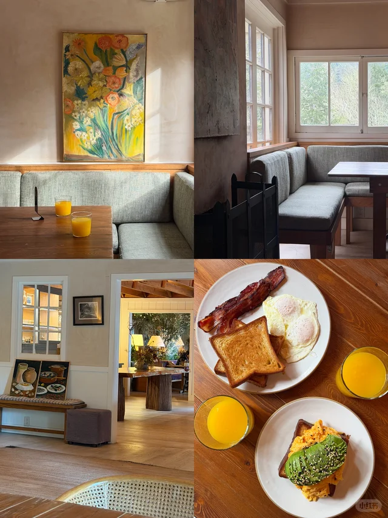
「🌲湾区周末逃离计划 📍Dawn Ranch」
想短暂逃离都市的话，Dawn Ranch是绝佳的周末小度假。
「旧金山 Land's End 陆地尽头」
SF海岸边的徒步路线，看海听浪声完全治愈。
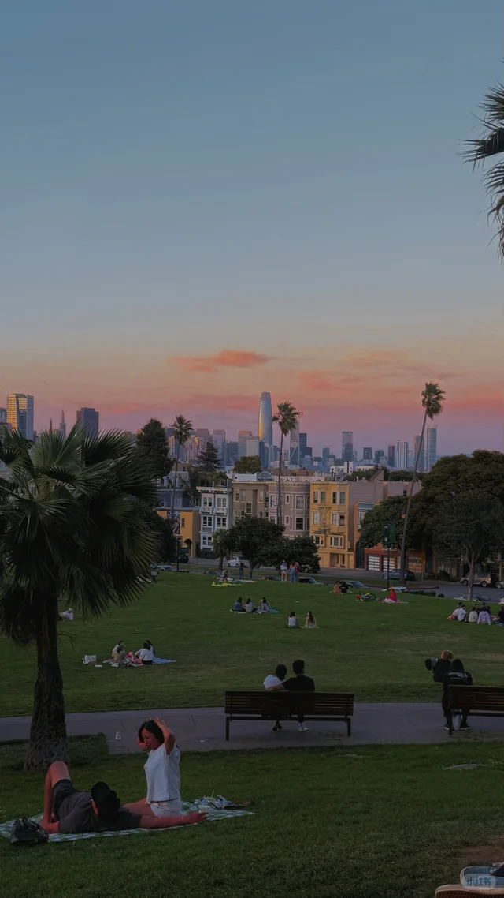
「🇺🇸旧金山｜这是我去过最美公园之一」
博主心目中最美的SF公园，出片又能放空。
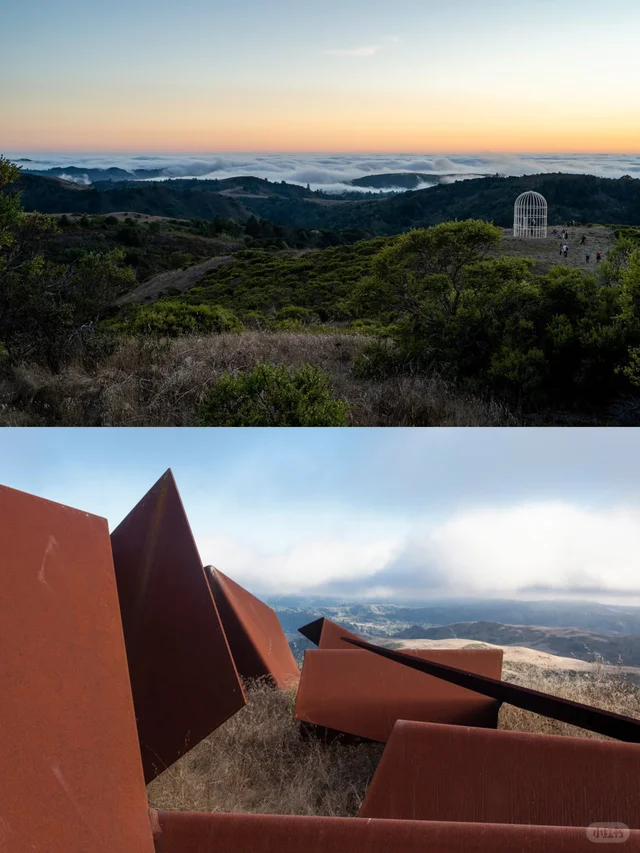
「湾区桃花源记——Djerassi艺术徒步」
结合艺术装置的徒步路线，文艺青年的桃花源。
🎨艺术与文化
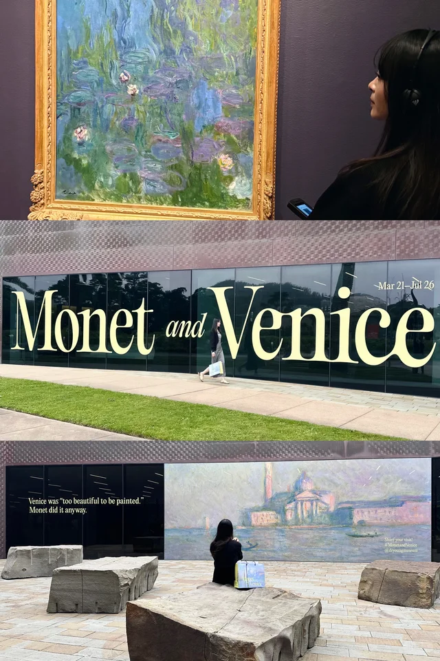
「湾区生活 | SF莫奈画展」
莫奈画展登陆SF，去之前可以先看看博主的真实体验。
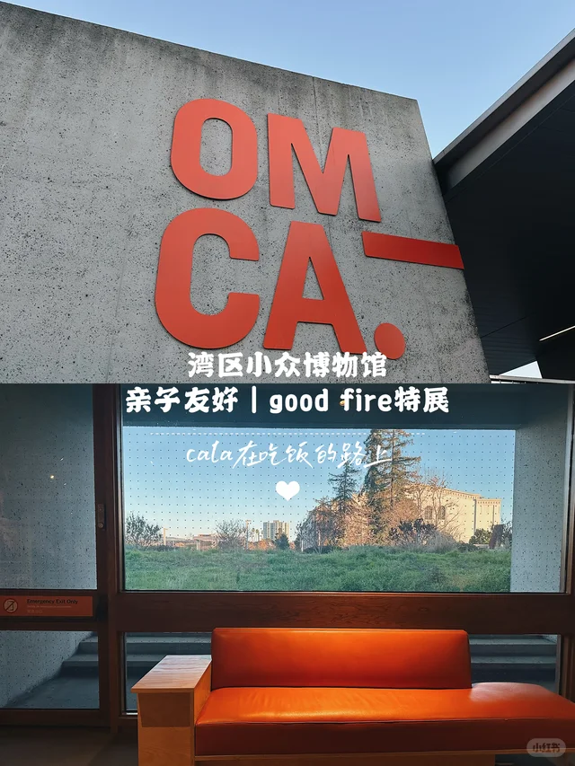
「SF看展🍊时隔7年又见盐田千春」
盐田千春的红线装置再次来到SF，错过要再等很多年。
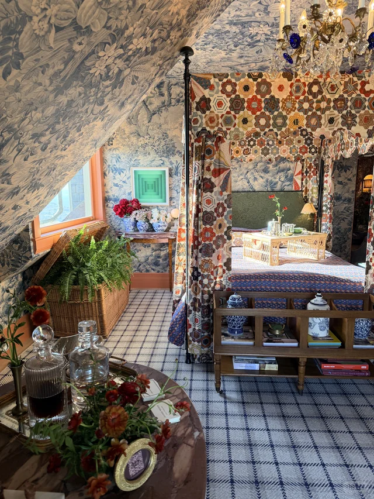
「湾区 | SF Decorator Showcase 年度展又来了」
家居爱好者每年最期待的展览，灵感和审美双重盛宴。
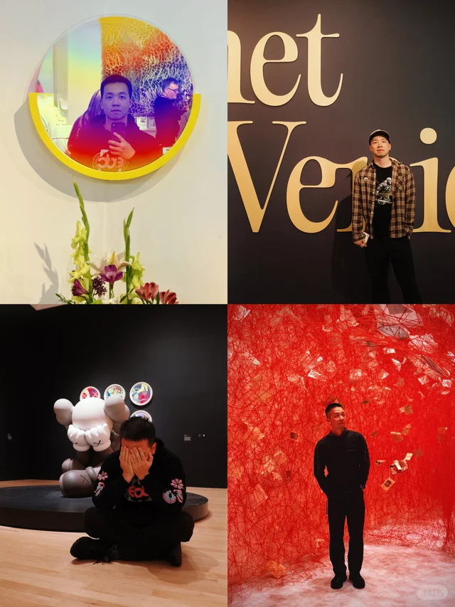
「湾区看展 | 你见过办在motel里的艺术展吗」
在motel里办的艺术展，光是概念就足够新奇有趣。
「「旧金山宝藏文艺书街」」
SF文艺青年必去的书街，慢慢逛能消磨一下午。
💎宝藏地点
「湾区周末｜Jackson Square是sf最美街区吧」
Jackson Square被誉为SF最美街区，建筑控不要错过。
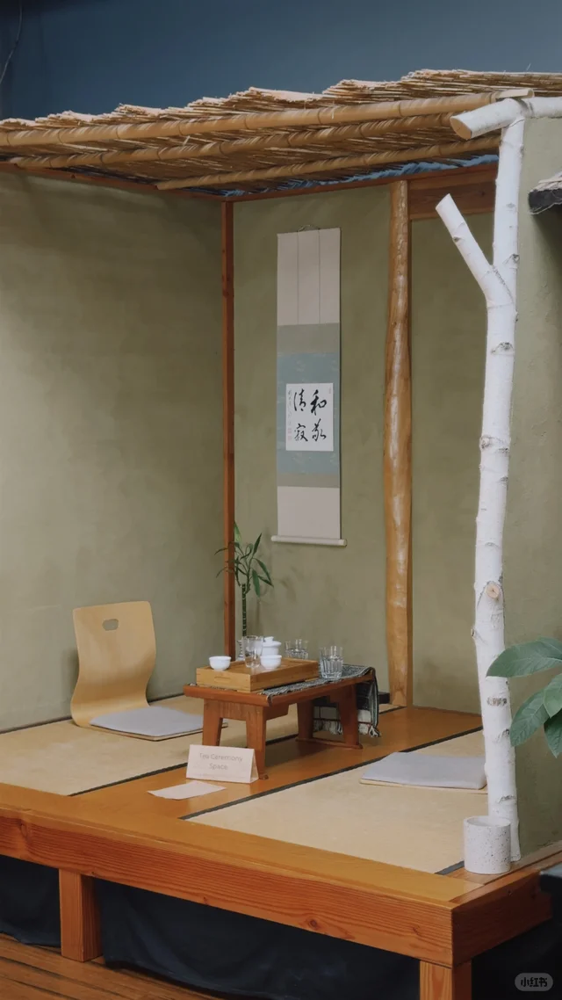
「湾区茶室，适合找个雨后点一壶茶，读一本书」
雨后窝在茶室喝茶看书，湾区难得的慢节奏角落。
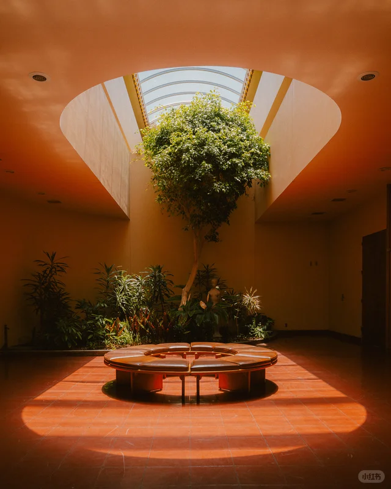
「旧金山我最爱的4个地方｜Citywalk出片必备」
本地人私藏的4个Citywalk出片点，照片随手都好看。
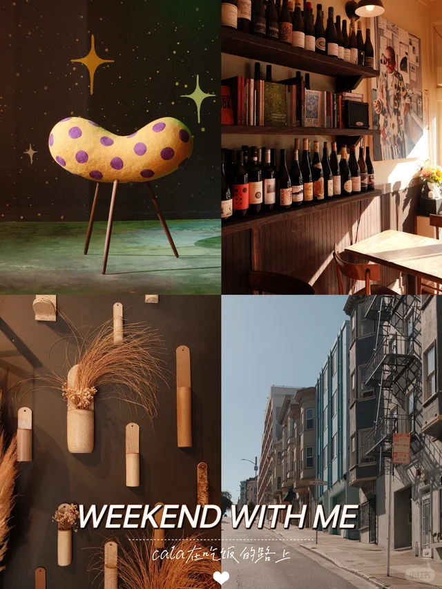
「旧金山城市攻略｜每个生活在这里的人都爱它」
适合长期居住者重新发现SF的城市攻略，干货满满。
「旧金山市区里的森林秘境」
藏在SF市区里的森林秘境，没想到城市里也有这片绿洲。